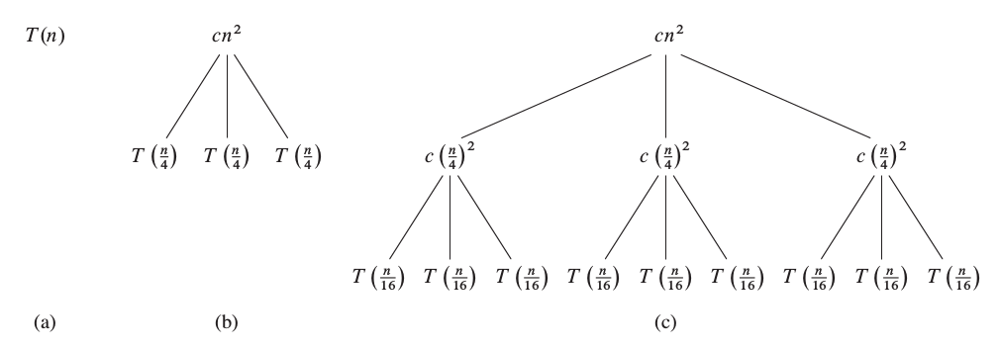
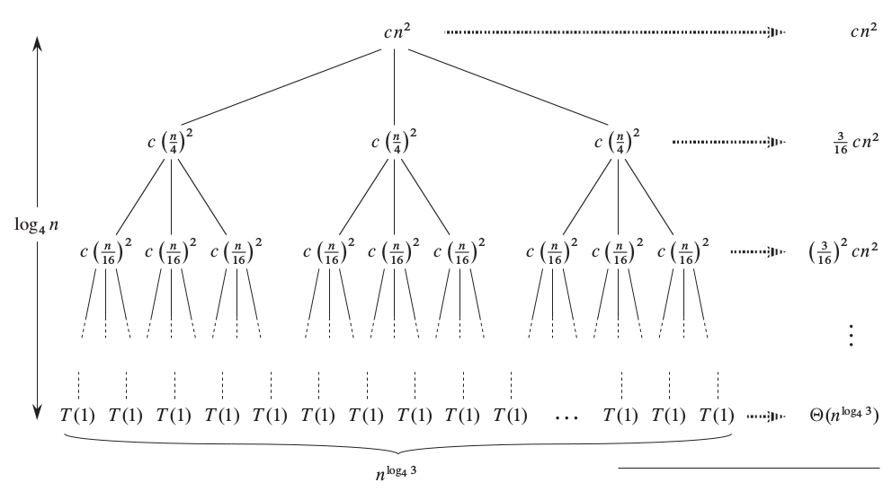

We have already seen recursion used in sorting:
Definition: Recursion
Recursion is when a procedure that:
- Divides the input into smaller problems,
- and applies itself on the smaller problems, until
- the problem is so small that it can be solved quickly.
def mergesort(A):
# Termination
if len(A) <= 1: return A
# Recursion
A1 = mergesort(A[:n/2])
A2 = mergesort(A[n/2:])
return merge(A1, A2)
Let $T(n)$ be the time for mergsort to terminate given an input array with $n$ elements.
We know:
$$T(n) = \left\{\begin{array}
\ \Theta (1) & \mathrm{\ if\ } n \leq 1 \\
T(n/2) + T(n/2) + \Theta(n) & \mathrm{\ else}
\end{array}\right.$$
! What is a good $g(n)$ for $T(n) = \mathcal{O}(g)$?
A recurrence equation is an equation that defines $f(n)$ based on $f(m)$ for some $m < n$, and other complexity classes.
For example:
$$ T(n) = 2 T(n/2) + \Theta(n) $$
def quicksort(A, p, r):
k = partition(A, p, r)
quicksort(A[p:k+1], p, k)
quicksort(A[k+1:r+1], k+1, r)
$T(n)$ is time of quicksort for array of length $n$.
Note: $k$ is between $p$ and $r$ (inclusively).
Worst case:
$k = p$ or $k = r$, i.e. the pivot is placed at the ends of the subarray.
Best case:
$k = (p+r)/2$.
Average case:
$k = \alpha p + (1-\alpha) r$ for some $0\leq \alpha\leq 1$.
def quicksort(A, p, r):
k = partition(A, p, r)
quicksort(A[p:k+1], p, k)
quicksort(A[k+1:r+1], k+1, r)
$T(n) = \Theta(n) + T(n_\mathrm{line3}) + T(n_\mathrm{line4})$
Worst case:
$n_\mathrm{line3} = 1$$n_\mathrm{line4} = n-1$$T(n) = \Theta(n) + T(n-1)$
Best case:
$n_\mathrm{line3} = n/2$$n_\mathrm{line4} = n/2$
Average (general) case:
$n_\mathrm{line3} = \alpha n$$n_\mathrm{line4} = (1 - \alpha) n$
So we get:
Worst-case:
$$T(n) = \Theta(n) + T(n-1)$$
General case:
$$\begin{eqnarray}
T(n) &=& \Theta(n) + T(\alpha n) + T((1-\alpha) n) \\
&\leq& \Theta(n) + 2T(\alpha n)
\end{eqnarray}$$
Note, without loss of generality, we assume $\alpha \geq 1/2$.
If we are just interested at the asymptotic upperbound, we can relax recurrence equations to recurrence inequalities.
Example:
$T(n) = \Theta(n) + T(n-1)$becomes
$T(n) \leq \Theta(n) + T(n-1)$
$T(n) = \Theta(n) + T(n-1)$.
Let’s show that $T(n) = \mathcal{O}(n^2)$.
Note:
Always state the assumptions, and the next step clearly as “Need to show”.
Assumption:
$T(n) = T(n-1) + \Theta(n)$.
and
Need to show:
$T(n) = \mathcal{O}(n^2)$
Need to show:
There exists some $a, b, c$ such that $T(n) < a n^2 + b n + c$ for all large $n$.
! We observe that $a n^2 + bn + c = \mathcal{O}(n^2)$ for all $a, b, c$ (verify).
We prove by induction that such $a, b, c$ exist.
Suppose that $T(k) \leq a k^2 + bk + c$ for all $k < n$, we need to show $T(n) \leq a n^2 + bn + c$.
Know
$T(n) = T(n-1) + \Theta(n)$
$T(k) \leq a k^2 + bk + c$ for all $k < n$
Need to show
$$
\begin{eqnarray}
T(n) &=& T(n-1) + \Theta(n) \\
&\leq& a (n-1)^2 + b(n-1) + c + dn \\
&\leq& an^2 + (b+d-2a)n + (c+1)
\end{eqnarray}
$$
Need to solve for $(a, b, c)$ so that $T(n) \leq an^2$.
$\implies$ $a \geq (b+d)/2$,
$\implies$ $c < -1$
So we have demonstrated that
$$ T(n) = T(n-1) + \Theta(n) $$
implies that there exists a choice for $a, b, c$ such that
$$ T(n) \leq a n^2 + bn + c$$
This further implies that
$$ T(n) = \mathcal{O}(n^2) $$
Q.E.D. (quod erat demonstrandum)
Recurrence tree is another method for solving recurrence equations.
It is sometimes harder, and sometimes easier than substitution.
It requires the skill of observing a pattern in an arithmetic series.
Consider a recurrence equation, we can use it to successively expand the terms $T(\dots)$, and form a tree. We do so until $T(1)$, and add up all the weights in the tree, level by level (intermediate and the leaf-level).
We hope that there is a simple expression for each level of the tree, and that the height of the tree is also known (as a function of $n$).
! This taken from the text book (Section 4.4)
Consider the recurrence equation:
$$T(n) = 3T(n/4) + \Theta(n^2)$$
We can successively expand $T(n)$:

! How many levels can there be?

There are $L = \log_4 n$ levels.
At each intermediate level, we have the weights as:
$cn^2, (3/16)cn^2, \dots (3/16)^i cn^2, \dots$. Call this $\alpha^i cn^2$ where $\alpha = \frac{3}{16}$.At each level, we have the number of nodes: $1, 3, 3^2, 3^3, \dots, 3^i, \dots$
The weights at the intermediate levels:
$$ T_1 = cn^2\cdot \sum_{i=0}^L \alpha^i = cn^2 \frac{\alpha^L-1}{\alpha-1} = \Theta(n^2)$$
The weights at the leaf level are:
$$ T_2 = T(1) 3^L = T(1) 3^{\log_4(n)} = T(1) n^{\log_4 3} < T(1) n = \Theta(n) $$
The total complexity is:
$$T(n) = \Theta(n^2) + \Theta(n) = \Theta(n^2)$$
Recurrence equations are needed when the algorithm is recursive.
We can use substitution to verify that a guess is correct.
We can use recurrence tree to analytically derive the solution by counting.